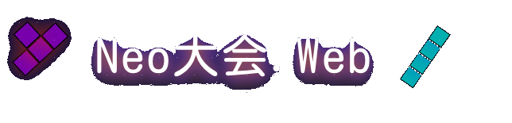

作成者:Tamago0926
お知らせ
第2回Online Tetris Neo大会概要
対戦場所
対戦は以下のリンクで行ってください
Turbowarp:
https://scratch.mit.edu/projects/423246183
Github:
https://cosmo-zero.github.io/Tetris_Neo2_A/
参加方法
この大会にはStanderd Battle部門・Zone Battle部門・Skil Battle部門の3つの部門があります。以下のリンクから参加したい部門とユーザー名をコメント欄に記入してください。全ての部門に出ても構いません。
試合形式
試合は
cosmo_zero
様作の
Online Tetris Neo2
のStanderd Battle・Zone Battle・Skil Battleで行います。 試合はどの部門でも5先で行います。結果は
ここ
のコメント欄に記入してください。
試合の流れ
1回戦の相手が決まり次第、相手といつ対戦するか・どこで対戦するかを話し合って決めてください。試合の勝敗が決まると、勝者が報告をしてください。1回の試合には、相手との打ち合わせなども含めておおよそ3日間の時間を与えます。その間に報告までを終わらせてください。もし締め切りまでに間に合わなかった場合は、コメント欄に報告してください。報告されなかった場合は両者とも棄権とします。
大会参加者
過去の大会
第一回Neo大会